Enhanced Quadrature Encoder Pulse (eQEP) Lab#
The objective of this lab is to gain familiarity with the Enhanced Quadrature Encoder Pulse (eQEP) module. This lab will illustrate a common use-case of the eQEP module: connecting quadrature signals to the C2000 device and using the eQEP to calculate motor characteristics.
Solution#
The Academy lab modules provide step-by-step instructions for users to follow along and carry out; however, the completed software solutions are also available in the device’s SDK.
See your device’s specific SDK to obtain this lab’s software solution.
You can download your device’s SDK by going to the device’s product page on TI’s website and navigating to the ‘Design & Development’ and ‘Software Development’ tabs.
This specific lab’s solution can be found in: [Device_SDK_Install_Path]/examples/driverlib/single_core/eqep.
Overview#
In this lab, an eQEP module will be used to calculate the position and speed of a motor encoder given a set of quadrature signals. The eQEP in this lab will be configured for a generic 1000-line incremental quadrature encoder, similar to the LVSERVOMTR offered by TI. The quadrature signals will be generated using the device’s ePWM and GPIO pins at a constant frequency. Users with access to a motor encoder may also connect the quadrature signals from their motor encoder to the C2000 device to further evaluate the performance of the eQEP module.

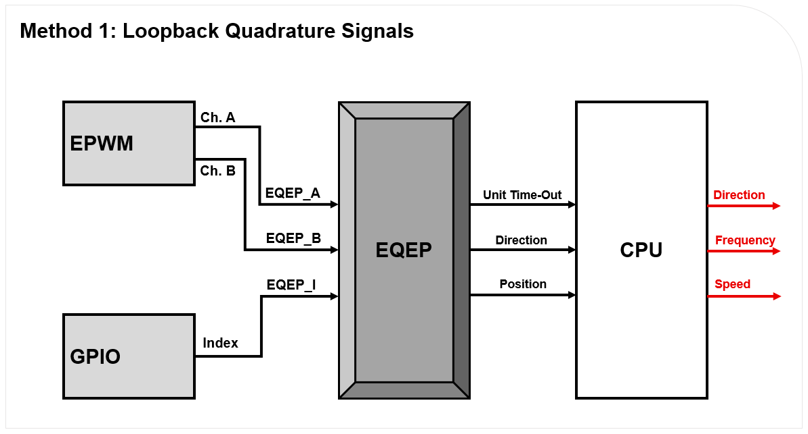

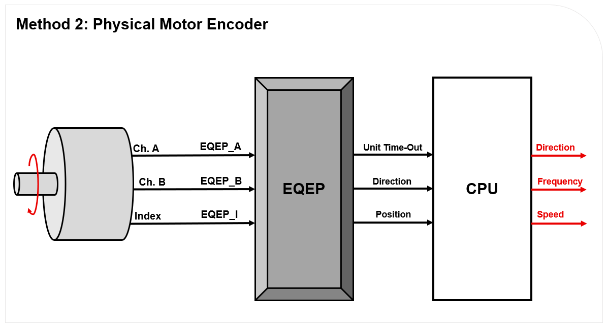
The channel A, channel B, and index quadrature signals will be fed into the C2000 device’s eQEP module, which will be configured in quadrature-count mode. The eQEP module will determine the direction of motion using the channel A and channel B signals. The position counter within the eQEP will keep track of the position of the motor encoder with respect to the zero index position. The eQEP module will issue periodic interrupts to the CPU using Unit time-out events.
Within the application code for this lab, there will be an interrupt handler that will be responsible for calculating the frequency of the encoder signals using characteristics from the eQEP module. The speed of the motor will be calculated using this frequency. The final output of all of these calculations and motor characteristics can be viewed in the “Watch Variables” panel of Code Composer Studio.
Lab Setup#
Hardware Setup#
Required hardware for this lab:
ControlSOM with the supplied USB cable.
Jumper cables (3).
Oscilloscope (optional).
LVSERVOMTR or similar encoder (optional).
This lab exercise is intended for the F29H85x ControlSOM. Before continuing this lab, please be sure to reference the ControlSOM User Guide for hardware setup details.
Using the supplied USB cable, connect the USB Type-C connector into your C2000 board and the USB Standard Type-A connector into your computer’s USB port.
Please note that a docking station is recommended to successfully run this lab. If you are using the controlSOM docking station, an additional power supply is needed for the docking station. See the ControlSOM User Guide for more details.
Check the power status LEDs (LED1 and LED2) to confirm that the board is powered and provides a JTAG communication link between the device and CCS.
A 1000-line encoder is optional, but recommended to allow you to generate dynamic quadrature signals for the eQEP module.
Software Setup#
Required software for this lab:
The device’s SDK
Your device’s software development kit (SDK) download can be found on the “Software Development” section of your device’s product page on TI’s website.
The Code Composer Studio (CCS) platform.
See the CCS User’s Guide for more information about this IDE.
Start a CCS Project#
Our first task is to import an empty project to our CCS workspace.
Open CCS and go to File → Import Project(s). A new window should appear.
Click the Browse button and select the
[MCU_SDK_[DEVICE]_Install_Path]/examples/driverlib/single_core/empty_projectsand click “Select Folder”.Note that the default Windows installation directory
[MCU_SDK_[DEVICE]_Install_Dir]isC:/ti/c2000/MCU_SDK_[DEVICE]_X_XX_XX_XX_XX.
Under Discovered Projects, you should now see the
empty_driverlib_project.

Click Finish to import and copy the
empty_driverlib_projectinto your CCS workspace.After the project has been imported, the project explorer window should look like below:

Rename the project:
Right-click on the project in the “Project Explorer” panel. Select Rename from the drop-down menu and rename the project to ‘eqep_academy_lab’ or a name of your choosing.
Now click the Down Arrow located to the left of the imported project to expand it and select
empty_driverlib_project.c. Right-click on the file, and select Rename to rename the file to ‘eqep_academy_lab_main.c’ or a name of your choosing.
Configure the GPIOs#
We will begin this lab exercise by configuring the GPIO within the
c2000.syscfg file of the project. Double-click the c2000.syscfg file within
the project to open the SysConfig GUI. This lab requires a single dedicated
GPIO which will represent the index signal from a quadrature encoder.
To initialize this GPIO within SysConfig, perform the following steps:
Add a GPIO by clicking the (+) icon next to ‘GPIO’ on the left pane
Set the name of the GPIO as ‘myGPIOIndex’
Set the GPIO Direction as ‘Pin is a GPIO output’
Ensure the Pin Type is set as ‘Push-pull output/floating input’
Initialize the GPIO pin to low by enabling the checkbox next to Write Initial Value and set the Initial Value to be ‘0: GPIO state is LOW’
Under PinMux, set the GPIO to be ‘GPIO2’

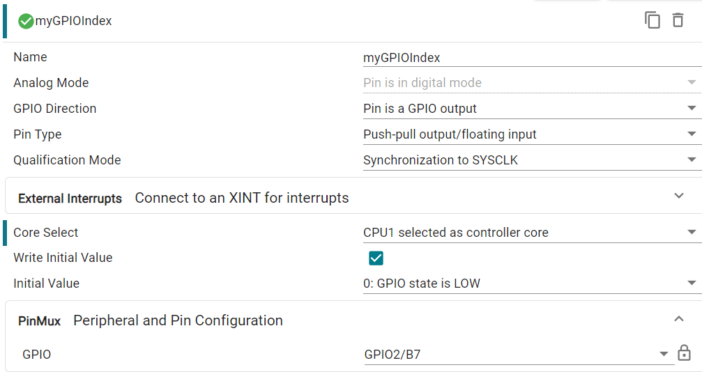
The state of this pin will be continually toggled within the program’s application code. The pin will pulse high for the length of a single encoder cycle every time the encoder disk makes a full rotation. In this lab, a single rotation occurs every 1000 pulses of EPWM1A and EPWM1B.
Configure the ePWM#
The EPWM module will be used to generate the quadrature signals and is configured as two 2.5kHz PWM waveforms with 50% duty cycle that are offset 90° from each other. EPWM1A corresponds to quadrature channel A and EPWM1B corresponds to quadrature channel B. For more information on the ePWM module, please review the Control Peripherals module.
We will start by adding a PWM instance within Sysconfig by clicking on the (+) sign next to ‘EPWM’ within the left pane of Sysconfig. Name this EPWM instance ‘myQuadraturePWM’. Now that we have added an EPWM instance, we will configure the EPWM1 ‘Timebase’ submodule as follows:
Set High Speed Clock Divider to ‘Divide clock by 1’
Set Time Base Period to ‘24000’
Set Counter Mode to ‘Up - down - count mode’

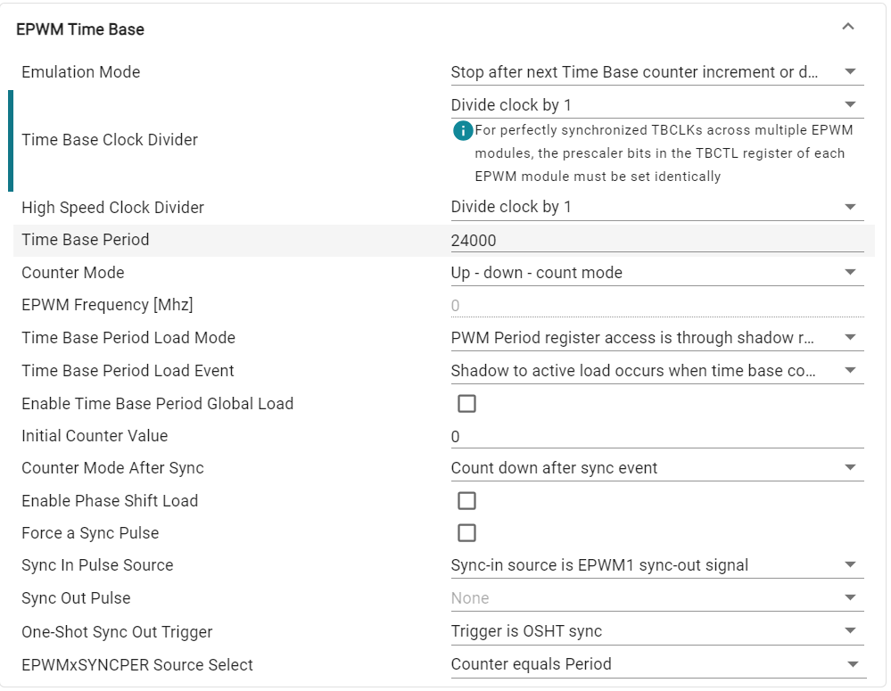
The ‘Counter Compare’ submodule for EPWM1 will be as follows:
Set Counter Compare A (CMPA) to ‘12500’

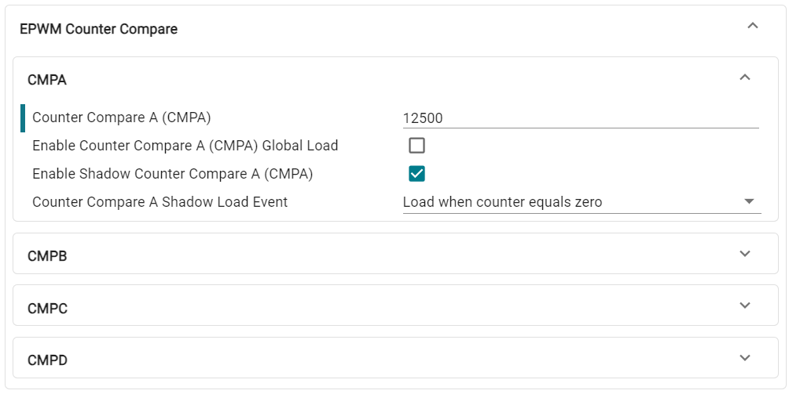
Now, configure the ‘Action Qualifier’ submodule for EPWM1A as follows:
Enable Shadow Mode
Set Shadow Load Event to ‘Load when counter equals zero’
In Events to Configure for ePWMxA output, select ‘Time base counter up equals COMPA’ and ‘Time base counter down equals COMPA’
Set Time base counter up equals COMPA to ‘Set output pins to High’
Set Time base counter down equals COMPA to ‘Set output pins to Low’

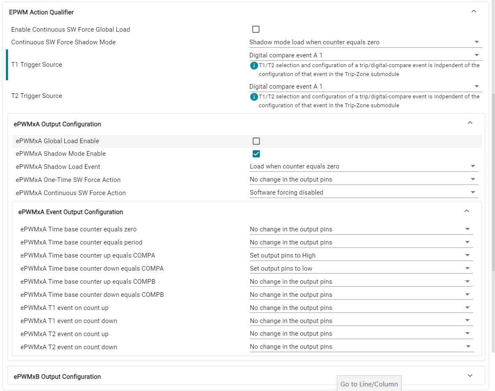
Configure the ‘Action Qualifer’ submodule for EPWM1B as follows:
Enable Shadow Mode
Set Shadow Load Event to ‘Load when counter equals zero’
In Events to Configure for ePWMxB output, select ‘Time base counter equals period’ and ‘Time base counter equals zero’
Set Time base counter equals period to ‘Set output pins to High’
Set Time base counter equals zero to ‘Set output pins to Low’

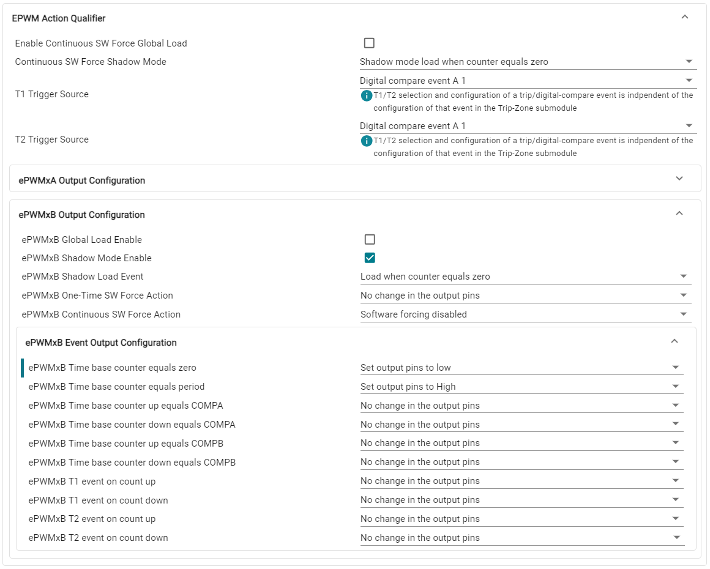
Lastly, we need to configure the PinMux for EPWM1. Follow the steps below:
Set the EPWM Peripheral to be used as ‘EPWM1’
Configure the ‘EPWM_A’ pin to be ‘GPIO0’
Configure the ‘EPWM_B’ pin to be ‘GPIO1’

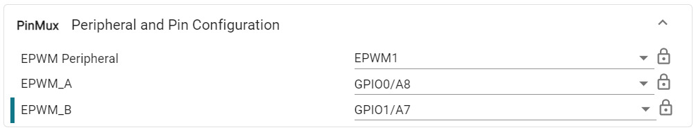
Configure the EQEP#
Next, we will need to configure the EQEP module being used to process the quadrature signals. The exact configuration of the EQEP is dependent on the encoder being used. In this lab, the EQEP will be tuned to interact with a 1000-line encoder.
Add an instance of the EQEP module by clicking the ‘+’ icon next to EQEP. Name the EQEP instance ‘myEQEP1’. Configure the EQEP module as follows:
Configure the ‘Quadrature Decoder Unit’ as follows:
Ensure that Position Counter Source (QSRC) is set to Quadrature-clock mode’
Set Resolution to ‘1X Resolution: Count rising edge only’

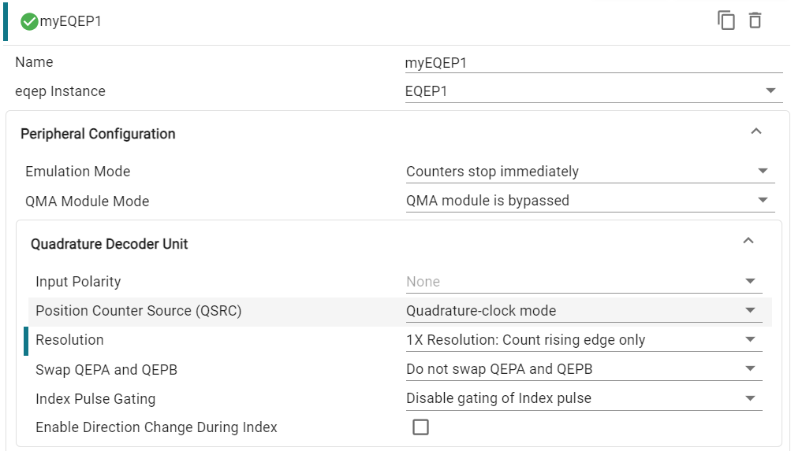
Configure the ‘Position Counter and Control Unit’ as follows:
Ensure Position Counter Mode is set to ‘Reset position on index pulse’
Set Maximum Position to ‘3999’
Recall that the Position Counter operates at 4x the frequency of the quadrature signals. Thus, for a 1000-line encoder, the maximum position is
Under ‘Latch Mode,’ configure QEP Capture Latch Mode (QCLM) to latch ‘On unit time-out event’ and ensure that Index Event Latch (IEL) is configured to latch ‘On rising edge of index’
Configure Position Index Events (IEI) to trigger ‘On rising edge of index’
Toggle on the checkbox next to Enable Position Counter

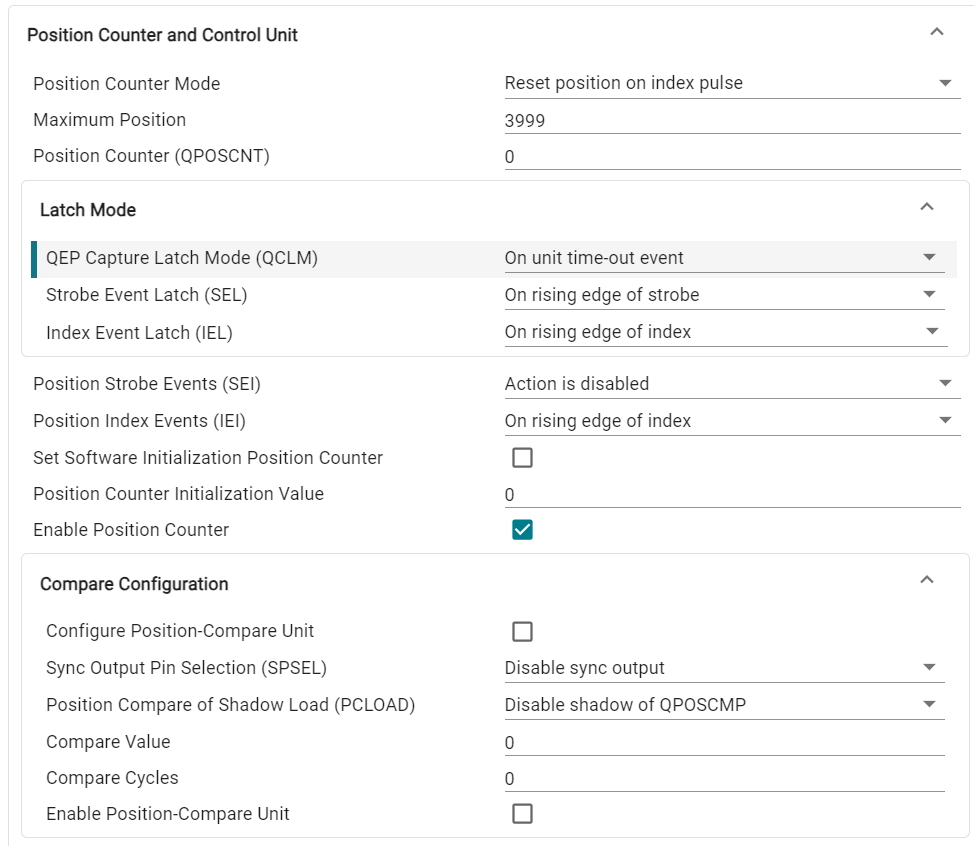
Configure the ‘Edge Capture Unit’ as follows:
Toggle on the checkbox next to Enable Unit Timer
Set the Unit Timer Period to 2000000

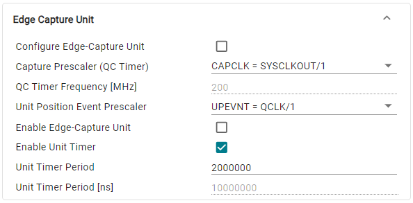
Configure the ‘Interrupts’ as follows:
Ensure that the checkbox next to User Interrupt is enabled
Toggle on the checkbox next to Register Interrupt Handler
Toggle on the checkbox next to Enable Interrupt
Configure the Interrupt Sources as ‘Unit time-out’

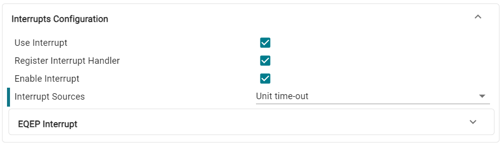
For Emulation Mode, configure it to ‘Counter unaffected by suspend’ option
Configure the EQEP as follows:
Set the EQEP instance to be used as ‘EQEP1’
Set the EQEP A, B, Index, and Strobe source signals according to the image below:

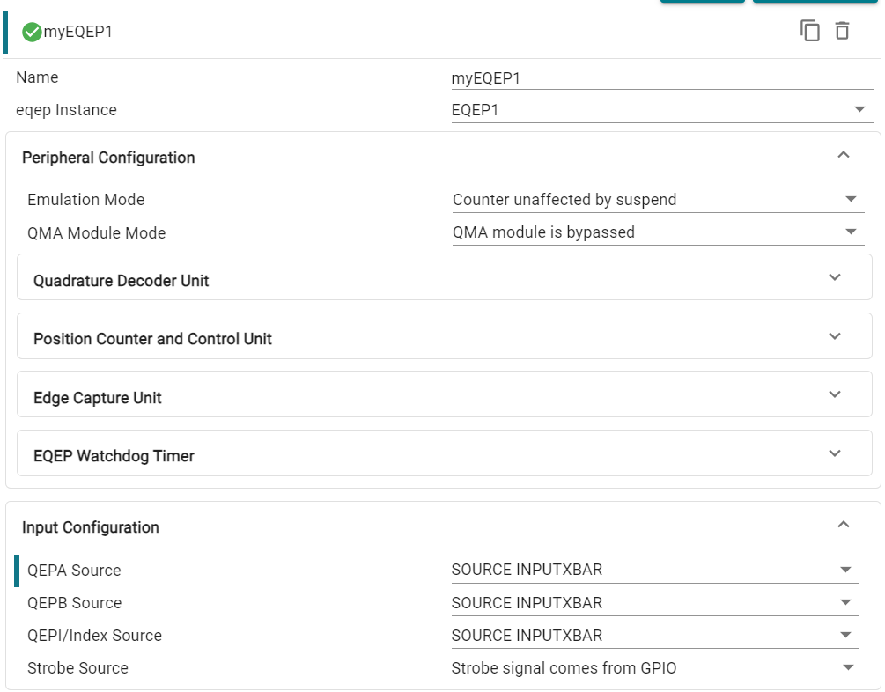
Configure the INPUTXBAR#
Lastly, we will need to configure the INPUTXBAR INPUTS to connect the EPWM and EQEP.
Create three instances of the INPUTXBAR INPUTS module by clicking the ‘+’ icon next to INPUTSXBAR INPUTS.
Name and configure the INPUTXBAR INPUTS instances as follows:

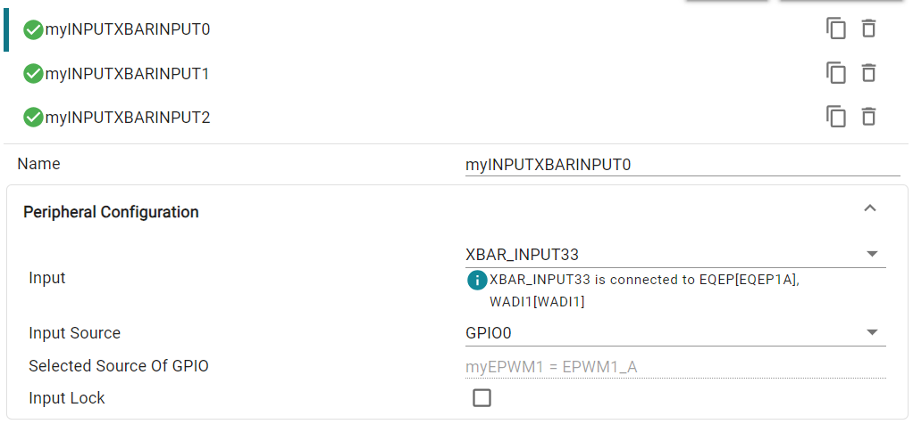

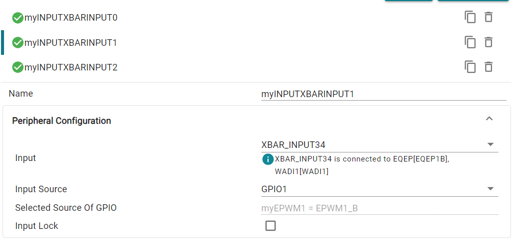

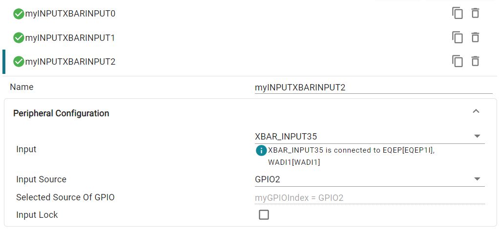
Program Setup#
Define Global Macros and Variables#
Next, we will move to the application code section of the lab. We will have to define any variables we are using throughout the project and setup the content within the main() function, which includes device initialization and the toggling of the GPIO index pin.
We begin by including the SysConfig-generated header file board.h. This should
already be included within the .c file by default.
//
// Included Files
//
#include "board.h"
Next, we will define any constants which will be used throughout the
application code. ENCODER_SLOTS is a constant which denotes the number of
lines within the encoder wheel. UNIT_PERIOD defines the duration of the unit
period, which will be taken into consideration when calculating the frequency
of the quadrature signals.
//
// Defines
//
#define ENCODER_SLOTS 1000U // LVSERVOMTR is a 1000-line encoder
#define UNIT_PERIOD 10000U // Unit period in microseconds
Now, it is necessary to define the global constants which will be used in the
application code. This lab requires two variables which will be used to store
the position counter value received from the eQEP module.
currentEncoderPosition, frequency, speed, and direction all store their
respective values and can be added to the Watch Expressions tab within the
CCS debug view.
//
// Globals
//
uint32_t oldCount = 0; // stores the previous position counter value
uint32_t newCount = 0; // stores the new position counter value for frequency calculation
uint32_t currentEncoderPosition = 0; // stores the current encoder position
int32_t frequency = 0; // measured quadrature signal frequency of motor using eQEP
float32_t speed = 0.0f; // measured speed of motor in rpm
int32_t direction = 0; // direction of rotation of motor
Define main()#
Lastly, we define the contents within main() which includes device
initialization and peripheral setup. There will be an infinite while loop which
controls the logic for the myGPIOIndex signal.
//
// Main
//
int main(void)
{
//
// Initialize device clock, peripheral clocks and interrupts
//
Device_init();
//
// Board Initialization:
// - Setup eQEP1, configuring the unit timer and quadrature capture units
// - Initialize GPIOs for EQEP1A
// - Interrupts that are used in this example are re-mapped to ISR functions
// found within this file.
// - Enable interrupts required for this example
//
//
// Setup ePWM1 to generate a 5 kHz signal to be an input to the eQEP
//
//
// Disable the ePWM time base clock before configuring the module
//
SysCtl_disablePeripheral(SYSCTL_PERIPH_CLK_TBCLKSYNC);
Board_init();
//
// Sync the ePWM time base clock
//
SysCtl_enablePeripheral(SYSCTL_PERIPH_CLK_TBCLKSYNC);
//
// Enable PIPE Global Interrupt (for INTs and RTINTs) and INT enable in CPU.
//
ENINT;
Interrupt_enableGlobal();
//
// Loop indefinitely
//
while(1)
{
//
// myGPIOIndex pulses high for every 1000 encoder cycles (400us (2.5kHz) * 1000 = 400,000 us)
//
DEVICE_DELAY_US(400000L);
GPIO_writePin(myGPIOIndex, 1);
DEVICE_DELAY_US(200L);
GPIO_writePin(myGPIOIndex, 0);
}
}
Set Up the EQEP ISR#
The last step for setting up this lab will be configuring the EQEP interrupt service routine (ISR). The ISR will be triggered by the unit time-out signal, which periodically interrupts the CPU to perform position and speed calculations.
Under the EQEP module in SysConfig, collapse the EQEP Interrupt drop-down:
Rename the Interrupt Handler to a name of your choosing e.g., ‘INT_myEQEP1_ISR’.
This name must match the name of the ISR function within your application code.
Ensure the Enable Interrupt in PIE checkbox is checked.

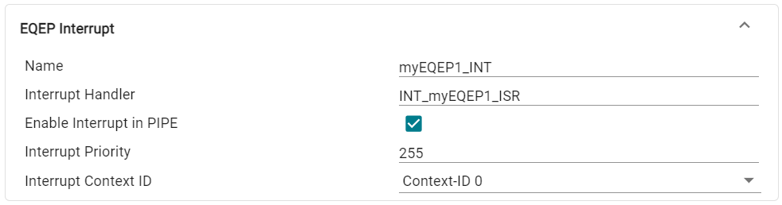
Within your application code source .c file, declare the interrupt handler with the same name as defined in SysConfig.
//
// eqep1 ISR- interrupts once per ePWM period
//
void INT_myEQEP1_ISR(void)
{
}
Populate the interrupt handler with the code and algorithms necessary for calculating the frequency, speed, and position of the motor below.
void INT_myEQEP1_ISR(void)
{
//
// Save current encoder position value for monitoring
//
currentEncoderPosition = EQEP_getPosition(myEQEP1_BASE);
//
// Get position counter value latched on unit time-out event
//
newCount = EQEP_getPositionLatch(myEQEP1_BASE);
//
// Gets rotation direction of motor
//
direction = EQEP_getDirection(myEQEP1_BASE);
//
// Calculates the number of position in unit time based on direction
//
if (direction > 0 ){
if (newCount >= oldCount)
newCount = newCount - oldCount;
else
newCount = ((4 * ENCODER_SLOTS - 1) - oldCount) + newCount;
}
else {
if (newCount <= oldCount)
newCount = oldCount - newCount;
else
newCount = ((4 * ENCODER_SLOTS - 1) - newCount) + oldCount;
}
//
// Stores the current position count value to oldCount variable
//
oldCount = currentEncoderPosition;
//
// Calculate frequency and speed values
// frequency found by counting external input pulses for UNIT PERIOD
// speed derived from encoder frequency and encoder resolution
//
frequency = (newCount * (uint32_t)1000000U) / ((uint32_t)UNIT_PERIOD);
speed = (frequency * 60) / ((float)(4 * ENCODER_SLOTS));
//
// Clear interrupt flag and issue ACK
//
EQEP_clearInterruptStatus(myEQEP1_BASE,EQEP_INT_UNIT_TIME_OUT|EQEP_INT_GLOBAL);
}
This concludes the coding portion of this lab.
Build the Project#
With the configurations and code complete, we can ‘Build’ the project to check for any errors. Once the project builds without errors, we will connect to the device, load the program to the device, and run it within a debug session.
Right-click on your project and hover over the Build Configurations button until another panel pops up. Select the CPU1_RAM build configuration.
With the RAM configuration selected, the project will be loaded to the RAM memory of the device.
Right-click on your project again and select Build Project(s) to build your program. Fix any compilation errors.
Run the Project#
Now we will start a debug session.
Ensure that the USB cable from your board is connected to your computer.
Right-click on your project and select Debug Project.
If prompted, check that only CPU1 is selected to load the program to.
This action should re-build your project, connect to the debugger, and load the program to the device.
The DEBUG window should populate and the debugger should have paused at the beginning of your
main().

Validate the Project#
Method 1: Loopback Quadrature Signals#
Because of InputXBAR, no external wiring is needed for EQEPA/B/I Signals.
LaunchPad QEP Switch
Note that all LaunchPads have the option of using dedicated EQEP header(s) located at the bottom of the device. IF using these headers, ensure that the QEP Select Switch on the LaunchPad is in the correct configuration to route the GPIO signals from the device to the dedicated EQEP header(s). If you do not use the bottom EQEP headers, ensure the QEP Select Switch is set accordingly. See your LaunchPad schematics for details on the switch settings.
Add the following variables to the Watch Expressions tab:
currentEncoderPosition
frequency
speed
direction
Enable Continuous Refresh for the Expressions. Verify that the frequency, speed, and direction match the expected values.
The frequency value should be 4x the frequency of the configured ePWM signals. Since we configured the ePWM module to generate 2.5 kHz signals, we should expect to see the measured frequency be 10,000 Hz.
The speed value (in rotations per minute) is derived from the measured frequency.
The direction should be 1. A direction value of 1 indicates that the motor is moving in the forward direction, and a direction value of -1 indicates that the motor is moving in the reverse direction.

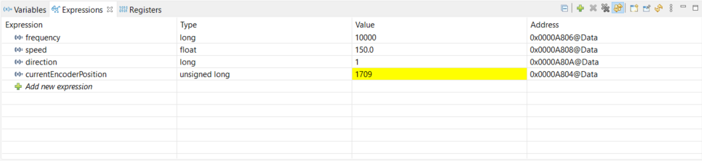
Observe that the value within currentEncoderPosition increments until it reaches the maximum position value, at which point the position resets to 0.
If a motor encoder is available, proceed to Secondary Method. Otherwise, terminate the debug session and close the project.
Method 2: Physical Motor Encoder#
Pause the debug session and update the INPUTXBAR INPUT settings within SysCfg to use the GPIO’s connected to the physical motor encoder.
Connect the quadrature signals from the motor encoder to the eQEP signals. The required signals are EQEPA, EQPEB, EQEPI, 5V, and GND.
If performing this lab with a LaunchPad, it is recommended to utilize the dedicated eQEP headers located at the bottom of the device. The pinout of these headers corresponds to a standard 5-pin connector.

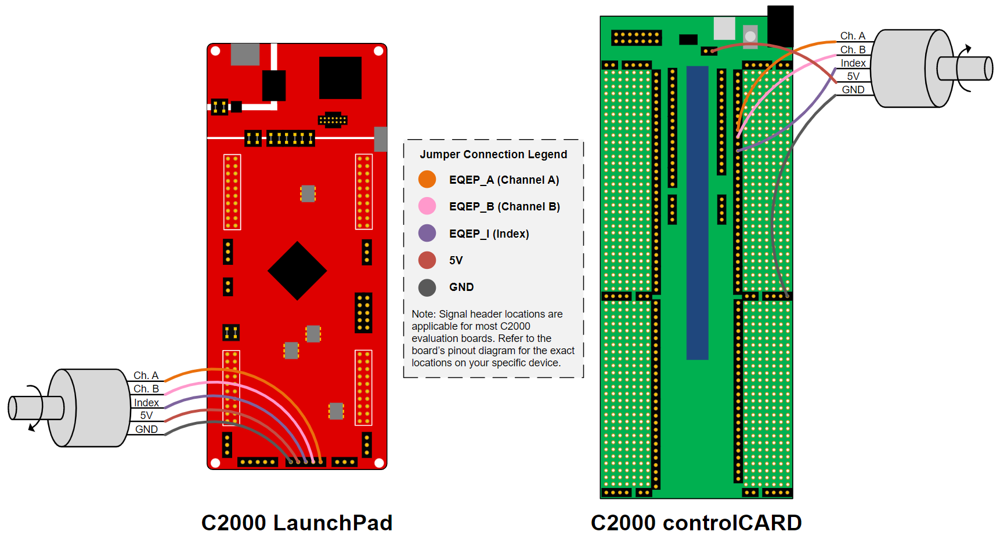
Resume the lab. Rotate the shaft of the motor and observe the values within the Watch Expressions tab changing according to the movements made to the motor.

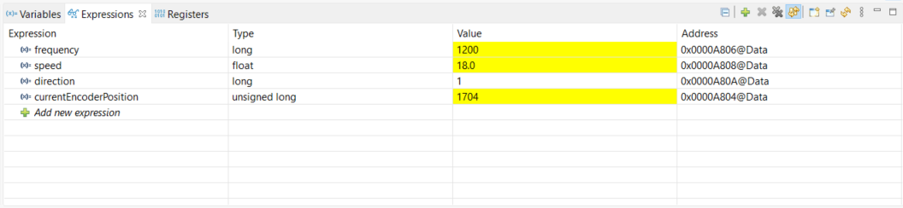
Terminate the Debug Session and Close the Project#
With the project developed and validated, we can close this debug session.
Click the red Stop button at the top of your
DEBUGwindow to terminate the active debug session and disconnect the debuggerYou can return to the
Project Explorerwindow by clicking on the corresponding button at the top of the panel on the left.
This concludes the lab exercise.
Full Solution#
Recall that the completed software solution is available as well. Please refer to the top of this page to review the location of this lab’s software solution.